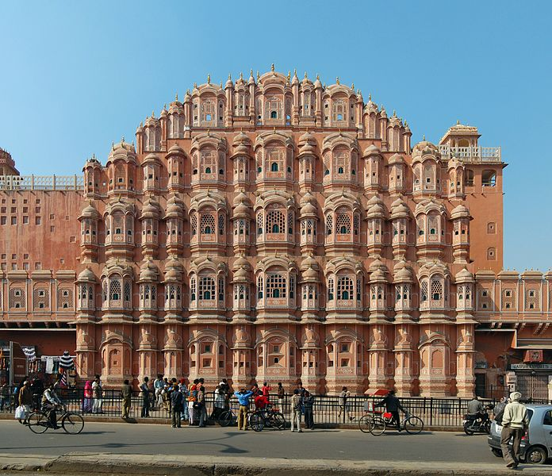

HOME
Hawa Mahal

About
Hawa Mahal (English translation: "Palace of winds" or "Palace of the Breeze") is a palace in Jaipur,
India, so it is named because it was essentially a high screen wall built so that the women of the royal family could observe street festivals while unseen from the outside.
It is Constructed of red and pink sandstone, the palace sits on the edge of the City Palace, Jaipur, and extends to the zenana, or women's chambers.
The structure was built in 1799 by Maharaja Sawai Pratap Singh. He was so intimidated and inspired by unique structure of Khetri Mahal and he built the grand and historical Hawa Mahal.
It was designed by Lal Chand Ustad in the form of the crown of Krishna, the Hindu god. Its unique five-storey exterior is akin to the honeycomb of a beehive with its 953 small windows called jharokhas decorated with intricate latticework.
The original intention of the lattice was to allow royal ladies to observe everyday life in the street below without being seen, since they had to obey strict "purdah" (face cover). The lattice also allows cool air from the Venturi effect (doctor breeze) through the intricate pattern,
air conditioning the whole area during the high temperatures in summers. Many people see the hawa mahal from the street view and thought that it is front of the palace but in reality it is the back of that structure.
In 2006, restoration and renovation works on the Mahal were undertaken, after a gap of 50 years, to give a face lift to the monument at an estimated cost of Rs 4568 million.
The corporate sector lent a hand to preserve the historical monuments of Jaipur and the Unit Trust of India has adopted Hawa Mahal to maintain it. The palace is an extended part of a huge complex. The stone-carved screens, small casements and arched roofs are some of the features of this popular tourist spot.
The monument also has delicately modeled hanging cornices. Like several other monuments of Jaipur, the palace is also constructed using sandstone.